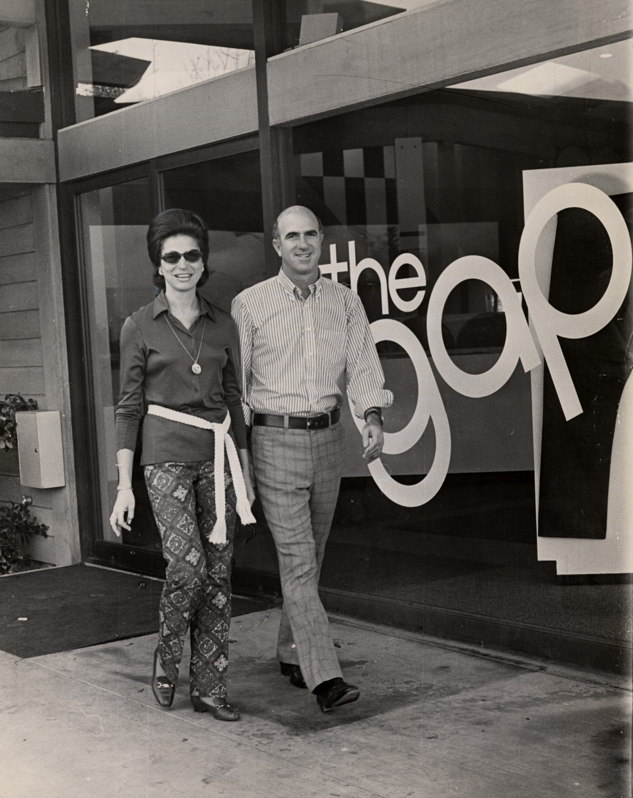

홈 > 브랜드 매거진 > 갭
갭
갭(Gap)은 1969년 도널드·도리스 피셔 부부가 설립한 미국 캐주얼 의류 리테일 브랜드이다.
산업 분야 패션·럭셔리 · 공개 등급 자료 기반 · 브랜드 평가 4.3 ★


한눈에 보는 브랜드
갭(GAP)은 1969년 도널드 피셔와 도리스 피셔 부부가 미국 샌프란시스코 오션가에 처음 문을 연 캐주얼 의류 브랜드다. 자신의 몸에 맞는 청바지를 찾기 어려웠던 경험에서 출발했고, 당시 젊은 세대와 기성세대 사이의 '세대 차이(gap)'를 뜻하는 이름을 도리스가 붙였다.
초기에는 리바이스 청바지와 음반을 함께 팔던 작은 매장이었으나, 이후 올드네이비, 바나나리퍼블릭, 애슬레타를 거느린 갭Inc로 성장했다. 미국을 대표하는 대중 캐주얼 의류 기업 가운데 하나로 자리 잡았다.
브랜드 관점
갭의 핵심 경쟁축은 유니클로, 자라, H&M 같은 글로벌 패스트패션과의 차별화다. 자라가 2주 안팎의 초고속 생산회전으로, 유니클로가 히트텍 같은 기능성 원단과 베이식 품질로 승부한다면, 갭은 데님과 티셔츠 중심의 아메리칸 캐주얼 헤리티지를 정체성으로 내세운다.
다만 매출의 대부분이 미국 시장에 쏠려 있어 글로벌 확장성은 상대적으로 약하다는 평가를 받는다. 2010년에는 오랜 파란 사각형 상징을 버리고 헬베티카 서체의 새 로고를 기습 공개했다가, 누리꾼의 거센 반발로 단 6일 만에 옛 디자인으로 되돌린 일화가 브랜드 자산 관리의 교훈 사례로 자주 인용된다.
최근에는 마텔에서 바비를 되살린 리처드 딕슨이 최고경영자로 부임해 상품 구색 축소, 광고 대행사 일원화, 디자이너 협업 등으로 회생을 이끌고 있다. 칸예 웨스트와의 10년 이지갭 계약은 2020년 체결됐으나 2022년 조기 결렬됐고, 한국에서는 신세계인터내셔날이 수입 전개를 맡았다가 매장을 대폭 줄인 끝에 사업을 정리하는 등 외부 변수에 흔들린 사례가 많았다는 점도 함의로 읽힌다.
시작과 성장
갭의 시작은 1969년이다. 호텔 리모델링업을 하던 도널드 피셔는 자신에게 맞는 청바지를 구하지 못한 불편에서 착안해, 아내 도리스 피셔와 함께 샌프란시스코 오션가에 리바이스 청바지와 음반을 파는 매장을 열었다.
소매업 경험이 전혀 없던 부부가 세대 차이라는 시대 정서를 이름에 담아 출발한 점이 특징이다. 사업이 커지면서 1983년 사파리풍의 여행 콘셉트 브랜드 바나나리퍼블릭을 인수했고, 1986년에는 어린이용 갭키즈 1호점을 캘리포니아 샌머테이오에 열면서 지금의 상징인 파란 사각형 로고를 도입했다.
1987년 런던 진출로 미국 밖에 처음 발을 디뎠고 같은 해 매출 10억 달러를 넘어섰다. 1990년 유아용 베이비갭, 1994년 합리적 가격대의 올드네이비를 잇따라 선보이며 사업을 넓혔다.
그러나 2000년대 들어 과도한 외형 확장과 정체성 혼란으로 침체를 겪었고, 이후 브랜드 재정비와 경영진 교체를 거치며 회생 과정을 밟아 왔다.
브랜드 아이덴티티
갭의 정체성은 군더더기 없는 미국식 일상복이라는 한마디로 요약된다. 핵심 상징은 짙은 파란색 사각형 안에 흰색 글자를 넣은 '블루 박스' 로고로, 1986년 도입 이후 브랜드의 얼굴 역할을 해 왔다.
유행을 빠르게 좇기보다 오래 입을 수 있는 기본 아이템과 좋은 품질을 우선한다는 지향을 내세운다. 타깃은 특정 연령에 갇히지 않고 남녀, 아동, 유아까지 가족 전체를 아우르며, 누구나 부담 없이 입는 보편적 캐주얼을 추구한다.
브랜드 목소리는 밝고 낙천적이며, 미국 대중문화와 자유로운 분위기를 강조하는 편이다.
제품과 서비스
주력 상품은 청바지를 비롯한 데님, 후디, 티셔츠, 로고가 박힌 스웨트셔츠와 맨투맨이다. 대표 품목인 로고 후디는 정가가 약 70달러 수준이며 세일 시 20달러대에서 40달러대까지 내려가고, 색상과 사이즈 선택지가 넓다.
면과 재생 폴리에스터를 섞은 원단을 쓰는 등 일상복에 맞춘 소재를 사용한다. 판매는 직영 매장과 자체 온라인몰, 할인 라인인 갭팩토리 등 다양한 경로로 이뤄진다.
현재 상태
현재 갭은 갭Inc 산하 핵심 브랜드로 운영되며 본사는 미국 샌프란시스코에 있다. 최고경영자는 마텔 출신의 리처드 딕슨으로, 상품 구색 축소와 디자인 혁신을 앞세워 회생을 주도하고 있다.
갭Inc는 2024 회계연도에 20여 년 만의 최고 매출총이익률을 기록하며 실적 개선을 이어 갔고, 단일 브랜드 갭의 정확한 한국 내 매출 등 일부 세부 수치는 공개되지 않았다. 한국에서는 신세계인터내셔날이 2007년부터 수입 전개해 왔으나 최근 사업을 정리하는 방향으로 가닥을 잡았다.
타임라인
BI/CI 변천사
함께 읽을 브랜드
 패션·럭셔리 · 편집 검수리바이스
패션·럭셔리 · 편집 검수리바이스리바이스는 청바지를 작업복에서 세대와 태도를 드러내는 문화적 유니폼으로 바꾼 브랜드다. 튼튼한 바지는 시간이 지나며 자유, 젊음, 반항, 일상성을 담는 상징으로 확장...
H&M(Hennes & Mauritz)은 스웨덴에 본사를 둔 다국적 패스트패션 의류 기업이다.
 패션·럭셔리 · 편집 검수자라
패션·럭셔리 · 편집 검수자라자라는 패션을 예측하기보다 시장의 반응을 빠르게 읽고 다시 매장으로 돌려보내는 브랜드다. 트렌드를 길게 기획하는 대신 고객 반응과 유통 속도를 무기로 삼아, 패션을...
 패션·럭셔리 · 편집 검수디젤
패션·럭셔리 · 편집 검수디젤디젤(Diesel)은 1978년 렌조 로소가 이탈리아 브레간체에서 설립한 데님 중심의 컨템포러리 패션 브랜드다. 도발적이고 실험적인 디자인으로 데님 헤리티지를 재해석...
 리테일·커머스 · 매거진 완성유니클로
리테일·커머스 · 매거진 완성유니클로유니클로는 패션을 유행의 장식이 아니라 생활을 구성하는 공산품처럼 다룬다. 브랜드의 힘은 화려한 스타일보다 베이직, 품질, 가격, 운영 시스템을 일관되게 정렬하는 데...
 패션·럭셔리 · 자료 기반몽클레르
패션·럭셔리 · 자료 기반몽클레르몽클레르(Moncler)는 1952년 프랑스에서 설립돼 현재 이탈리아에 본사를 둔 럭셔리 다운재킷 브랜드이다.
오메가(OMEGA)는 스위스 스와치 그룹 산하의 럭셔리 시계 제조 브랜드이다.
 패션·럭셔리 · 자료 기반베라왕
패션·럭셔리 · 자료 기반베라왕베라 왕(Vera Wang)은 1990년 뉴욕에서 설립된 미국의 웨딩·패션 디자이너 브랜드이다.